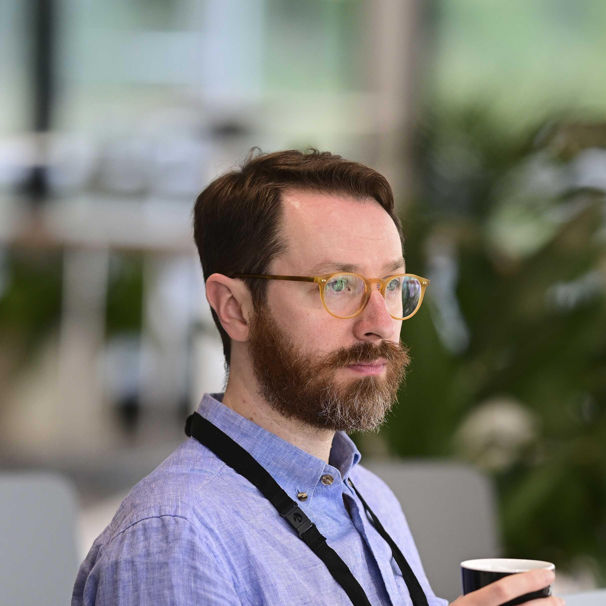

Jesse Dinneen
I am a Senior Lecturer at the Swedish School of Library and Information Science at the University of Borås. I previously held faculty positions at the Humboldt University of Berlin and Victoria University of Wellington. I did my PhD at McGill University.
My contact information can be found on my uni profile.
Research
My research interests are primarily in information ethics and personal information management (PIM), now especially concerning post-mortem info/data and AI. I try to create knowledge to facilitate responsible information management, which entails using technical, social, and philosophical research methods. A complete list of my publications is on Google Scholar and my scholarly code is on GitHub. Some recent and upcoming works:
- Review of and framework for research on information management and death
- Chapter on the epistemic injustices of AI-generated metadata
- Chapter on challenges of the information society
- Forthcoming article on the data-hyperobject and consent to personal data collection
- Forthcoming chapter on the value of personal collections for aging and remembrance
Past projects and topics have included AI use, ethics, and governance in LIS, AI auditing and regulation in the EU, PIM and cultural heritage, PIM and computer files, the nature of information, and using the LCSH in scientometrics and PIM interfaces.
Teaching & Supervision
Since 2016 I have taught 30+ courses on topics within information ethics and society, data processing and management, information systems design and development, responsible AI use and governance, and research methods. I enjoy imparting technical skills and reflective, compassionate attitudes to current and future information professionals with the goal of enabling them to be competent and critical leaders in the information society.
I have supervised 60+ BA/MA theses and the following doctoral students to completion:
- Dr. Sascha Donner, first supervisor, AI in documentation
- Dr. Vera Hillebrand, second supervisor, ageism in user studies
- Dr. Ba Xuan Nguyen, second supervisor, measures of international research collaboration
Prospective doctoral and post-doctoral supervisees: positions at the University of Borås are advertised and applied to here. Unfunded positions are not currently possible.
Service
I regularly support my university and the information science field through invited and volunteered service and public outreach. For example:
- I have advised the EU Fundamental Rights Agency on Assessing high-risk AI and advised on a report for the Dutch Government about the responsibilities of online intermediaries in the EU Digital Services Act.
- In 2025 I gave a keynote at the German AI Conference and was interviewed by SverigesRadio.
- I have been volunteering for ASIS&T for over a decade, such as on the Strategic Planning Committee, European Chapter, and various award juries. In 2024 I was awarded Distinguished Membership.
- I am a regional editor for Information Research. I have previously been on the editorial boards of ARIST, ACM Journal on Responsible Computing, Open Information Science, and Data Science and Informetrics.
- I have co-organised numerous conferences, tracks, and workshops.